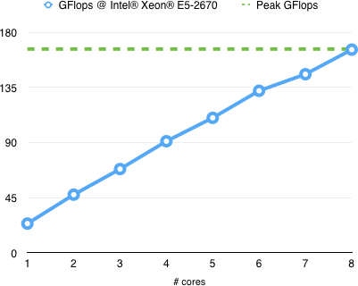
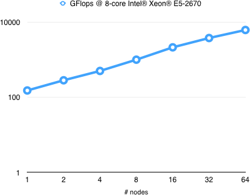

Ambient
Develop fast and scalable scientific computing applications
for cloud and cluster Linux server environments.
for cloud and cluster Linux server environments.
What is it
A framework for distributed parallel programming based upon partitioned global workflow model that enables automatic parallelism extraction in MPI/threading execution environment.The framework provides a selection of parallel linear algebra and vector algorithms using partitioned vector and tiled matrix class containers.
Performance chart

Example: Matrix product
#include "ambient/ambient.hpp"
#include "ambient/container/numeric/matrix.hpp"
#define N 16384
int main(){
ambient::tiles< ambient::matrix<double> > a(N,N), b(N,N), c(N,N);
for(int i = 0; i < a.mt; i++)
for(int j = 0; j < a.nt; j++){
ambient::numeric::fill_random(a.tile(i,j));
ambient::numeric::fill_random(b.tile(i,j));
}
for(int k = 0; k < a.nt; k++)
for(int j = 0; j < c.nt; j++)
for(int i = 0; i < c.mt; i++)
ambient::numeric::gemm_fma(a.tile(i,k), b.tile(k,j), c.tile(i,j));
ambient::sync();
return 0;
}
Performance chart

Example: Matrix product (MPI)
#include "ambient/ambient.hpp"
#include "ambient/container/numeric/matrix.hpp"
#define N 32768
ambient::scope::const_iterator where(int i, int j){
return (ambient::scope::begin() + j % ambient::scope::size());
}
int main(){
ambient::tiles< ambient::matrix<double> > a(N,N), b(N,N), c(N,N);
for(int i = 0; i < a.mt; i++)
for(int j = 0; j < a.nt; j++){
ambient::actor proc(where(i,j));
ambient::numeric::fill_random(a.tile(i,j));
ambient::numeric::fill_random(b.tile(i,j));
}
for(int k = 0; k < a.nt; k++)
for(int j = 0; j < c.nt; j++)
for(int i = 0; i < c.mt; i++){
ambient::actor proc(where(i,j));
ambient::numeric::gemm_fma(a.tile(i,k), b.tile(k,j), c.tile(i,j));
}
ambient::sync();
return 0;
}